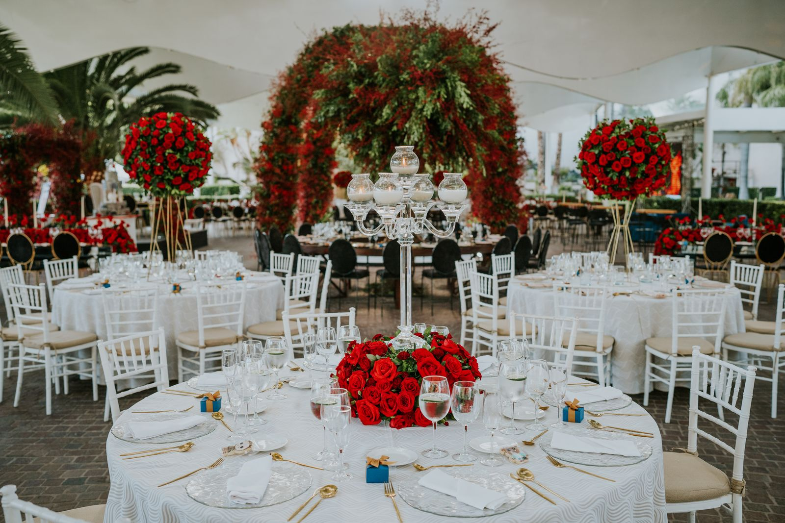
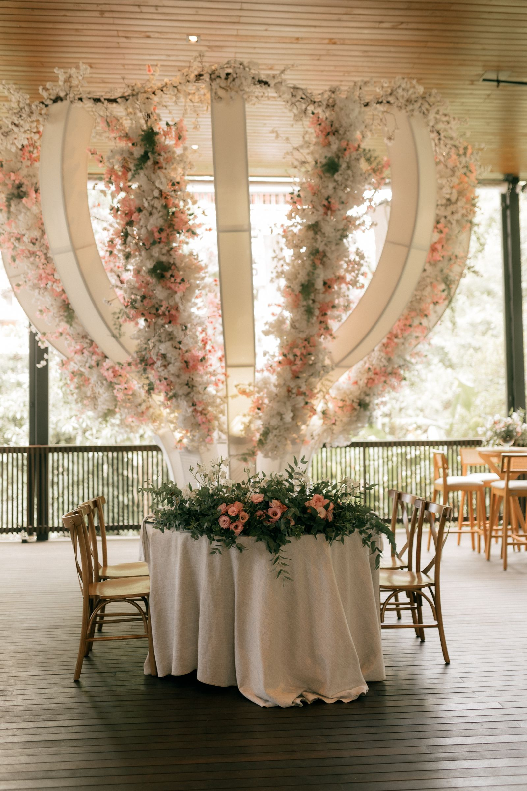
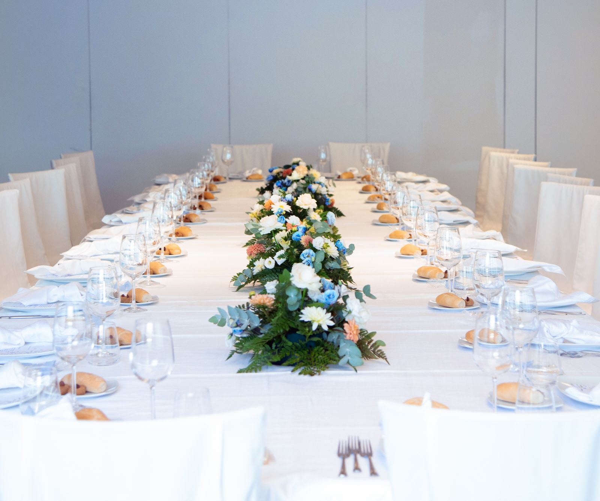
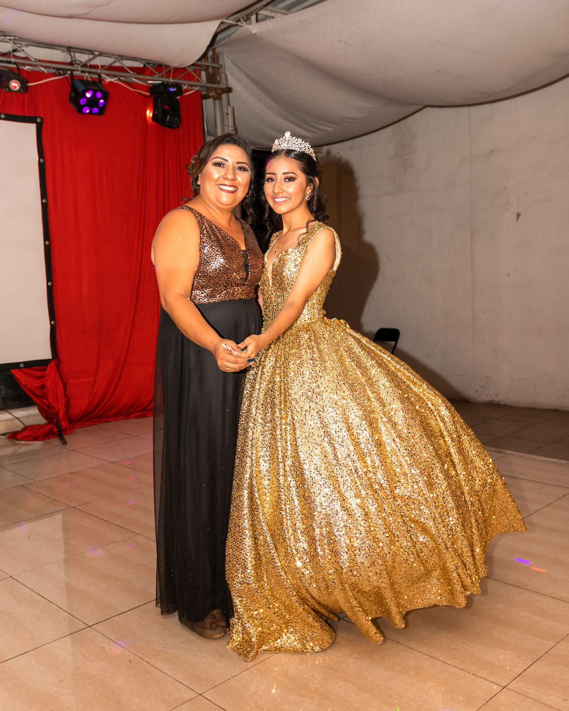
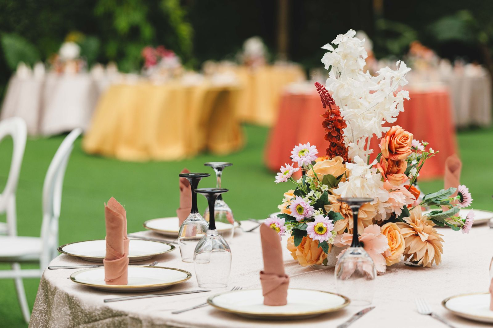
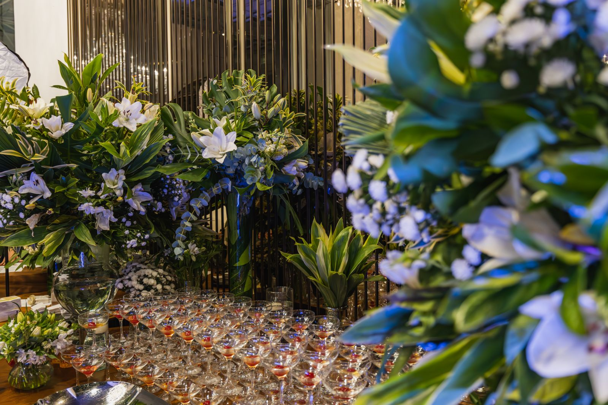
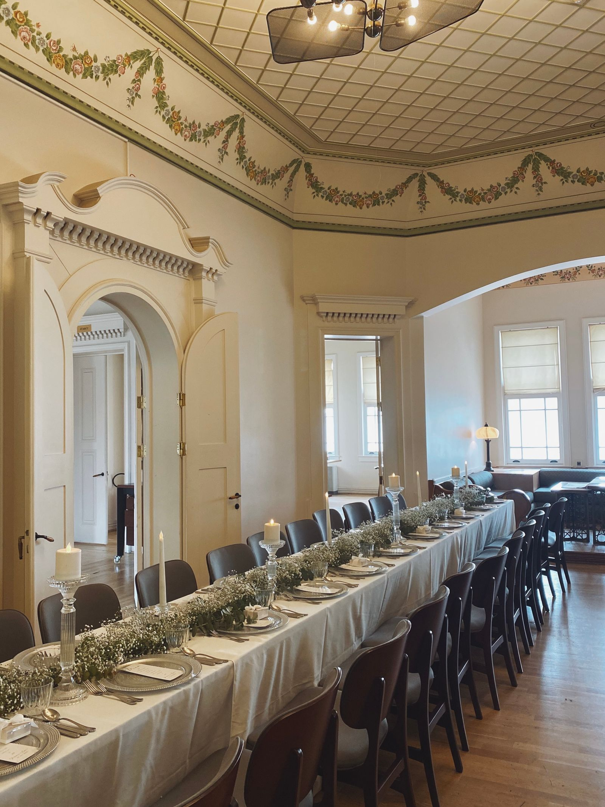

Listen first
We learn what matters before suggesting a plan or a package.

ABOUT OUR APPROACH
We help families turn a meaningful milestone into a celebration that feels personal, organized, and welcoming.
Meet with our teamOUR STORY
Our planning approach starts by listening: what the guest of honor loves, what the family wants to preserve, and what will help everyone enjoy the day.
A celebration is more than a venue and a schedule. It is a chance to gather generations, honor traditions, and give the guest of honor a moment that feels truly theirs.
Then we turn those priorities into practical choices the family can make together.
OUR PROMISE

We learn what matters before suggesting a plan or a package.

We keep next steps, decisions, and timelines understandable.

We plan the logistics so families can stay present for the celebration.
WHAT GUIDES US

HOW WE WORK TOGETHER
Your family owns the choices. We help gather options, organize details, and keep the plan moving.


CONTINUE EXPLORING
Learn about our planning services or compare the available package styles.